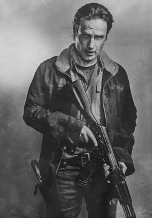

Rick Grimes
Rick Grimes es un policía de pueblo que tras ser herido en el cumplimiento del deber y permanecer en coma durante varias semanas, despertó en un mundo post-apocalíptico plagado de muertos vivientes.
Motivado por la vaga esperanza de encontrar a su familia con vida en Atlanta, Rick emprendió un peligroso viaje y eventualmente se convirtió en el líder de facto de un pequeño grupo de supervivientes que estaban asentados en un campamento en las afueras de la ciudad.